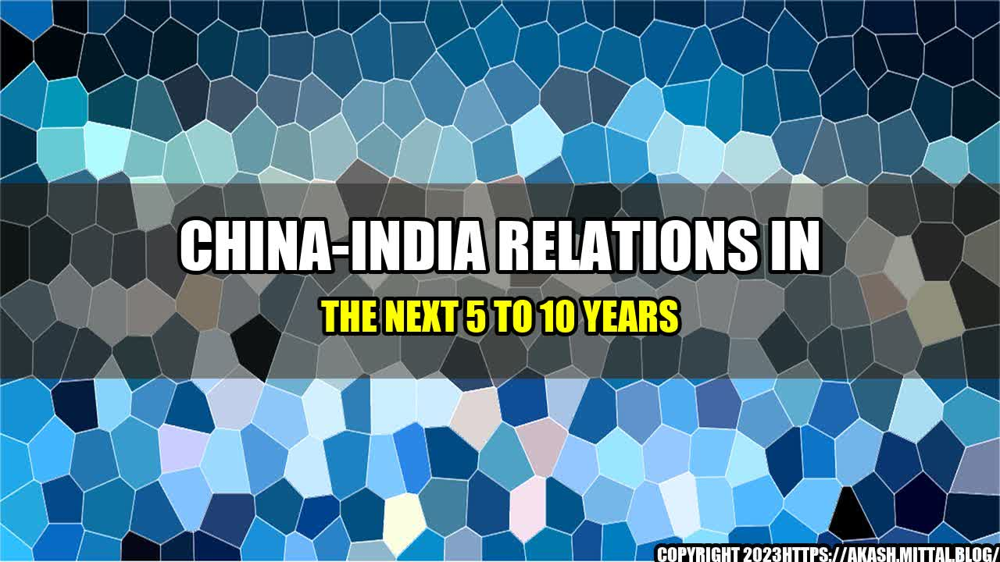

An Interesting Story: Understanding the Complex Relations between China and India

As a child, I remember listening to stories from my grandfather about the relations between two of the most populous countries, China and India. Being a history buff, he would often narrate tales of the Silk Route and how it brought these two countries closer to each other. However, as I grew up, I realized that the relations between China and India are not as simple as they seem. Despite the cultural similarities and business opportunities, the relationship between the two neighbouring countries have always been strained and challenged with border disputes and economic competition.
The Complexity of China-India Relations
China and India, with a combined population of 2.8 billion people, are often seen as the powerhouses of Asia, who hold a significant influence on the global economy and politics. Both countries have emerged as strong economies, and over the past few years, have established themselves as two of the fastest-growing economies in the world. However, their economic progress has been overshadowed by their border disputes and military clashes, which have left a significant impact on the region's geopolitical environment.
Quantifiable examples of the strained China-India relations include the following:
- In 2017, China and India had a two-month long standoff over a territory called the Doklam Plateau, which lies on the tri-junction of India, China, and Bhutan.
- In September 2020, China was accused of intruding into Indian territory, which led to a military clash in the Galwan Valley and led to the death of 20 Indian soldiers.
- In November 2020, India banned over 200 Chinese apps, including popular ones such as TikTok, WeChat, and PUBG Mobile, citing security reasons.
- In January 2021, both countries agreed to disengage their troops from the Pangong Tso area in Eastern Ladakh, which was considered as the first significant de-escalation of the situation in several months.
- In March 2021, Chinese Foreign Minister Wang Yi visited India and met with External Affairs Minister S Jaishankar to discuss border tensions and regional issues. Although both sides agreed on maintaining dialogue, experts believe that the relations between the two countries are unlikely to improve in the near future.
Based on these events, it is evident that the relations between China and India are complex and will pose significant challenges to both countries in the near future.
Why the Next 5 to 10 Years Look Tough?
The road ahead for China-India relations looks bumpy. Here are some reasons why:
- Border Disputes: Border disputes between China and India have been a significant hindrance to better relations. The long-standing issue of the border demarcation is yet to be resolved, and the recent military clash has further compounded the situation. This has led to increased military deployments along the border areas, which further increases the risk of a military confrontation.
- Economic Competition: As both China and India continue to grow economically, there is bound to be competition between the two countries. However, with the current state of relations, the competition has become intense and even hostile. The banning of Chinese apps in India and India's manufacturing strategy to reduce its dependence on Chinese goods is proof of this.
- Geopolitical Ambitions: China and India are both regional powers, and their geopolitical ambitions often collide. China's Belt and Road Initiative, which aims to connect Asia, Europe, and Africa, has been considered as a threat to India's interests in the region. On the other hand, India's growing partnership with the US and its allies is seen by China as an attempt to contain its regional dominance.
The Way Forward
While the future of China-India relations seems uncertain, there are some practical ways to improve the situation:
- Build Trust: Trust is the foundation of any healthy relationship. Both countries should work towards building trust with each other. One way to achieve this is by increasing people-to-people exchanges through cultural and educational programs, which will promote mutual understanding.
- Resolve Border Disputes: The border demarcation issue has been a significant obstacle to better relations between the two countries. Both sides should work towards resolving the issue through peaceful negotiations and dialogue.
- Collaboration: Despite the economic competition between the two countries, there is scope for collaborative efforts. Both countries can work together on issues of regional and global importance, such as climate change, energy security, and counter-terrorism.
In conclusion, China-India relations have always been complex, and the future looks no different. While it is essential for both countries to address the issues that have strained their relations, it is equally important to find ways to move forward and build a constructive relationship, which will benefit both countries and the region as a whole.
Hashtags: #ChinaIndiaRelations #BorderDisputes #EconomicCompetition #GeopoliticalAmbitions #BuildTrust #ResolveIssues #Collaboration
Category: Politics, International Relations, Asia
Curated by Team Akash.Mittal.Blog
Share on Twitter Share on LinkedIn